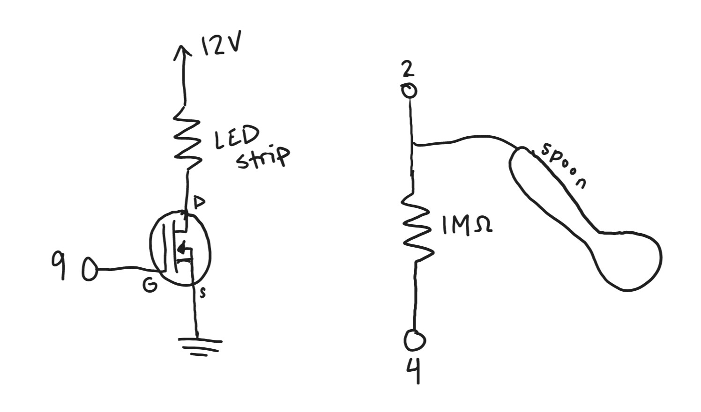
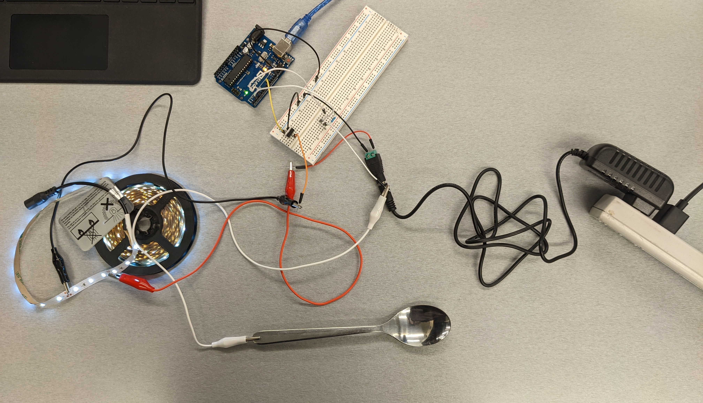

An LED strip is hooked up to a 12V external power supply. Its current is regulated by an N-MOSFET transistor connected to pin 9 of the Arduino. The LED strip draws 1.5A of current, which is well below the transistor's maximum rating of 32A.A spoon and 1M ohm resistor attached between pins 2 and 4 act as a capacitive touch sensor. The 1M ohm resistance is a good value for detecting whether someone is physically touching the spoon.
Circuit in Action

Though it isn't represented in the schematic, the 12V power supply also has a ground wire that is connected to the Arduino's GND pin along with the transistor. White wires are used for the capacitive sensor component.Touching the spoon makes the LED strip light up brightly. It starts to glow faintly as you hover close to the spoon.
/*
File: capTouchLED.ino
Author: Max Coppock
with some code we used for capacitive sensing in class,
ultimately from http://playground.arduino.cc/Main/CapacitiveSensor
This program controls the flow of current to a strip of LEDs with a transistor.
A user can turn the lights on by touching a capacitive-sensing spoon.
*/
//include capacitive sensor library
#include <CapacitiveSensor.h>
//define capacitive sensor object
CapacitiveSensor cs_4_2 = CapacitiveSensor(4,2);
//define pin our transistor is on
const int transistor = 9;
//variable for minimum of sensor range while touching the spoon
//initialized to 1023 because that's the max we can read
int sensorMin = 1023;
//variable for max of sensor range while touching the spoon
//initialized to 0 because that's the min we can read
int sensorMax = 0;
//variable for the max cap touch reading when no one is touching the spoon
int sensorLow = 0;
void setup() {
// turn off autocalibrate on channel 1
cs_4_2.set_CS_AutocaL_Millis(0xFFFFFFFF);
//start serial monitoring
Serial.begin(9600);
//Arduino GPIO pins default to input mode, so pins 2 and 4 are already set up
// for the capacitive sensor. We need to set the transistor and the built-in LED
// pins to output to write values to them.
//set transistor pin to output
pinMode(transistor, OUTPUT);
//set built-in LED to output
pinMode(13, OUTPUT);
//variable to store our capacitiveSensor variable
int capSense;
//in the first 1.5 seconds, record baseline resistance for cap touch
// NO TOUCHING during this time. The LEDs will be off below this threshold
while (millis() < 1500 ){
//take cap touch reading
capSense = cs_4_2.capacitiveSensor(30);
//if we sense a new high value while no one is touching the spoon
if (capSense > sensorLow) {
//save it to sensorLow variable
sensorLow = capSense;
}
}
//Turn the built-in LED on to signal you need to start touching the spoon for calibration
digitalWrite(13, HIGH);
//before t=3s, start touching the spoon
while( millis() < 3000){
// just waiting here :)
}
//by the time that built-in LED on the Arduino turns off, you should be touching the spoon
digitalWrite(13, LOW);
//until t=8s, calibrate while touching the spoon
// I was hoping to get a good range here based on where on the spoon you touch.
// But there isn't too much variation touching one end of the spoon vs the other...
// Maybe if we used a very very long spoon with resistors throughout it
while (millis() < 8000){
//take & save cap touch reading
capSense = cs_4_2.capacitiveSensor(30);
//if we see a new maximum value
if (capSense > sensorMax){
//save it to sensorMax
sensorMax = capSense;
}
//if we see a new minimum value
if (capSense < sensorMin){
//save it to sensorMin
sensorMin = capSense;
}
}
}
void loop()
{
//take a cap touch reading
long total1 = cs_4_2.capacitiveSensor(30);
//if capTouch input is greater than this sensorLow variable
// user is touching the spoon
if(total1 > sensorLow){
//constrain the capSense value based on sensorMin and Max
int v1 = constrain(total1, sensorMin, sensorMax);
//map the constrained value to an LED brightness range of 10 - 220 for analogWrite
v1 = map(v1, sensorMin, sensorMax, 10, 220);
//print out the mapped value to serial monitor
Serial.println(v1);
//write the mapped value to the transistor pin which controls current to the LED strip
analogWrite(transistor, v1);
}
//the user is not touching the spoon
else {
//turn the led strip off
analogWrite(transistor, 0);
}
}